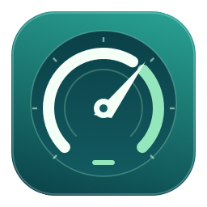
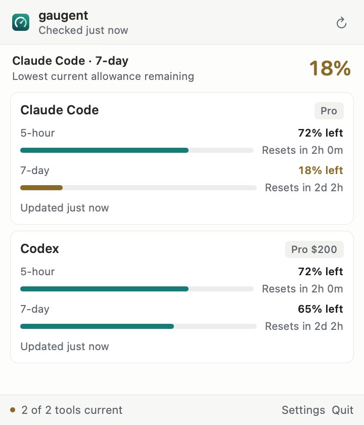
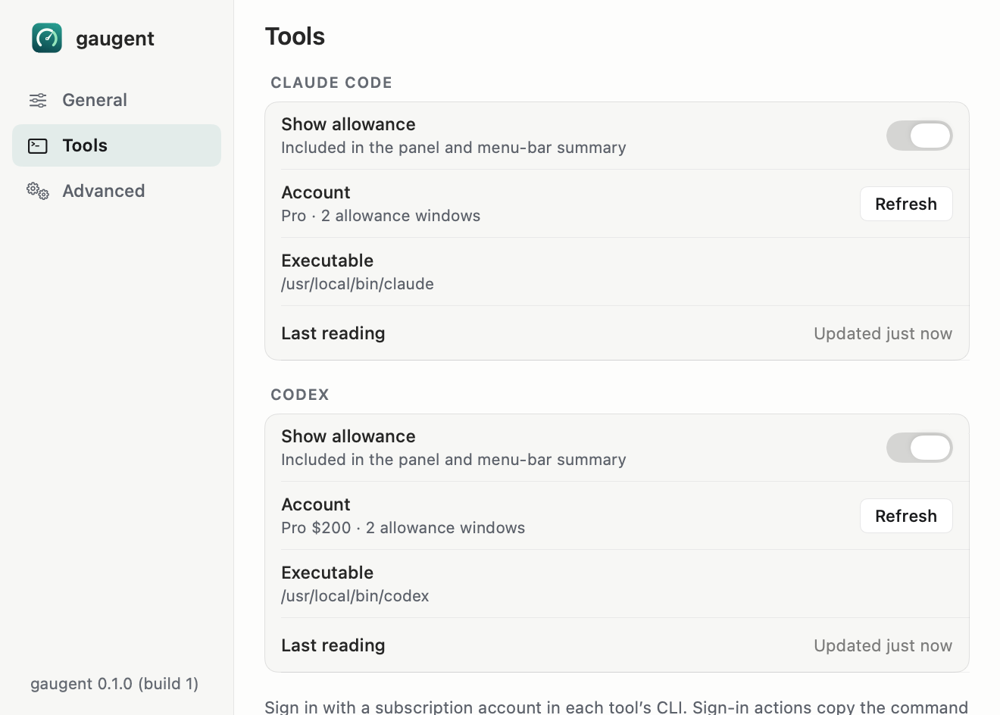

The limits that matter.
Session and weekly allowances together, with the lowest current allowance surfaced in your menu bar.

gaugentA small utility for your menu bar
Your Claude Code and Codex allowances, one glance away. See what remains and when it resets, without leaving your flow.
View releasesCheck GitHub Releases for available downloads.
macOS 14+ · Apple Silicon + Intel

Session and weekly allowances together, with the lowest current allowance surfaced in your menu bar.
See the reset time reported by each tool. Stale readings and connection problems are clearly marked.
gaugent reads from your tools’ existing CLI sessions. It doesn’t send prompts or store authentication tokens.
Quiet by default. Yours to adjust.
Choose your tools, set a low-allowance threshold, and decide what appears in the menu bar. Appearance, launch at login, and updates live in one familiar settings window.
Read the guide ↗
Get started
Download a published DMG, drag gaugent into Applications, and launch it.
Install and sign in to Claude Code or Codex. gaugent uses those sessions.
Open the menu-bar icon to see your allowances. Settings → Tools helps with missing tools or sign-in.
Subscription allowance, without another dashboard to manage.
View releases